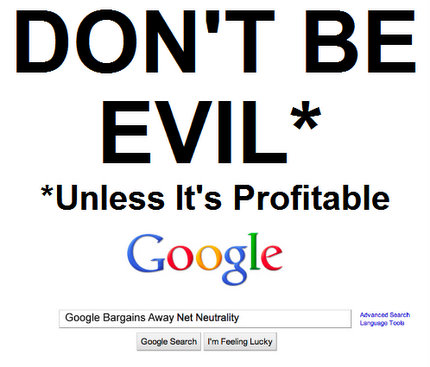
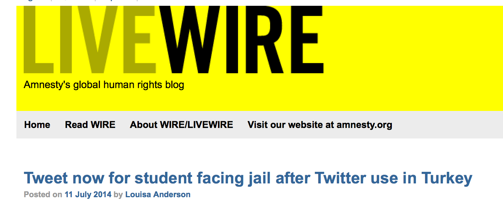

PirateBox
Manos a la obra!
Manos a la obra!
Por Marcos Vanetta / @malev
con ayuda de Gabriela Rodriguez / @gaba
Quién soy?
Marcos Vanetta, entusiasta de las tecnologías libres y trabajo como Knight/Mozilla Fellow at The TexasTribune. @malev
Se acuerdan del

O ahora será...
En tiempos de la nube
Conocen a estos pibes?
Esta foto esta aquí sólo por que me parece fantástica
Y empezaron a pasar cosas como esta
O cosas como
La verdad es que
PirateBox
Un router y un dispositivo de almacenamiento para crear una red inalámbrica que permita a sus usuarios compartir archivos de manera anónima y local. El proyecto fue iniciado por David Darts de NYU y hoy es mantenido en gran parte por Matthias Strubel (@MatthiasStrubel).
Cuenta el apoyo de una comunidad interesante.
- @PirateBox_Dev
- #piratebox
- forum.piratebox.cc
- @pirateboxcamp
PirateBox is registered under the GNU GPLv3. This license grants you the right to freely copy, distribute, and transform creative works according to the principles of copyleft.
QUIERO UNO YA!
No!
Lo vamos a hacer nosotrxs!
Necesitamos:
- Computadora
- Router TP-Link MR3020 o TP-Link MR3040
- Pendrive
- Bajen los archivos desde Piratebox (malev)
- Copiar 'install' en el pedrive
- Poner el Router en modo 3G
- Conectar el router a la computadora
- IP: 192.168.0.1 (MR3040) y 192.168.0.254 (MR3020)
- User/Password: admin/admin
- Firmware Upgrade with the correct firmware
Esperemos...
LISTO!
El después
- telnet 192.168.1.1
- Password
- Cambiar SSID
- Disfrutar
Cambiar la SSID
- vi /etc/config/wireless
- /etc/init.d/network reload
Y ahora?
Jugamos!
Recursos
Gracias
Comentarios y opiniones a @malev.